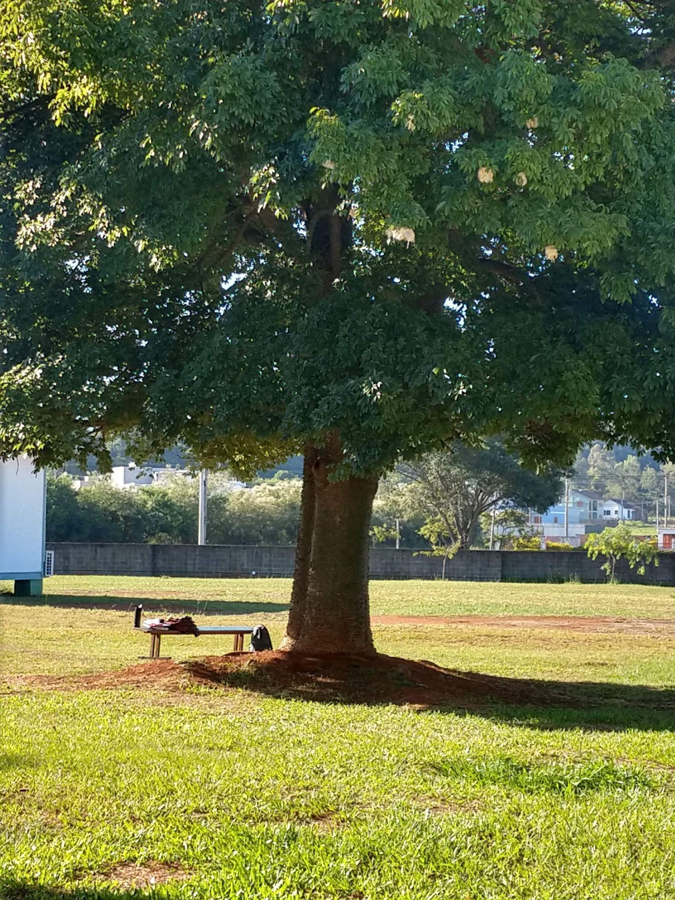

Em tempos de pandemia,
o lugar de pertencimento de jovens-alunos se esvaziou.

Te espero...
Foto: Elizabete Kowalski
Com o distanciamento social, o espaço virtual passou a ser uma possibilidade segura de contato.
As juventudes, a escola e o trabalho são atravessados em suas práticas cotidianas, pela pandemia, fazendo surgirem novas reconfigurações e sentidos.
Alguns desses deslocamentos foram compartilhados por Lina, Gumball, Harley e Sunshine.
Vamos conhecê-los?